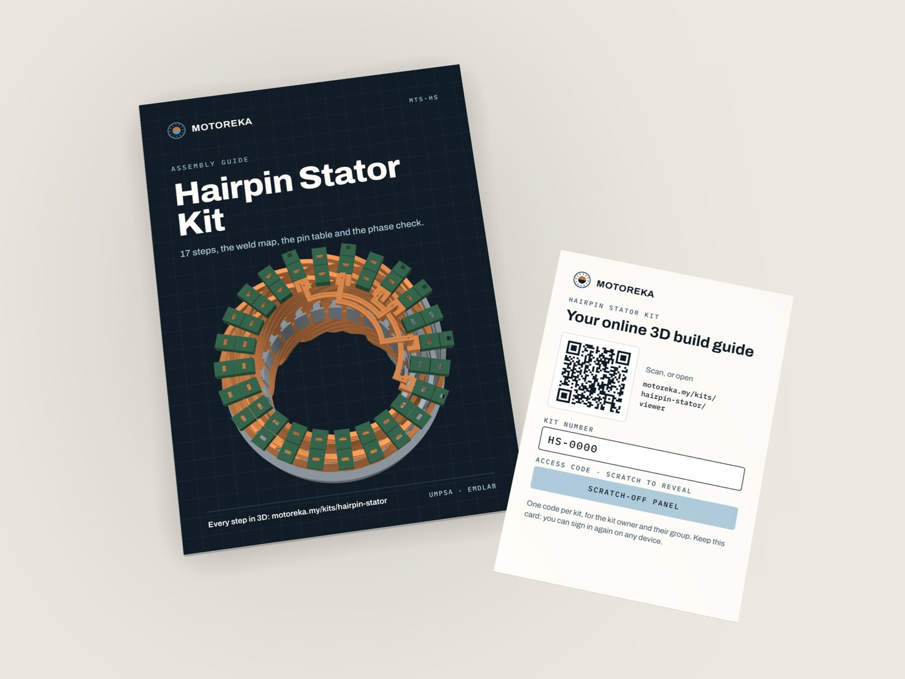
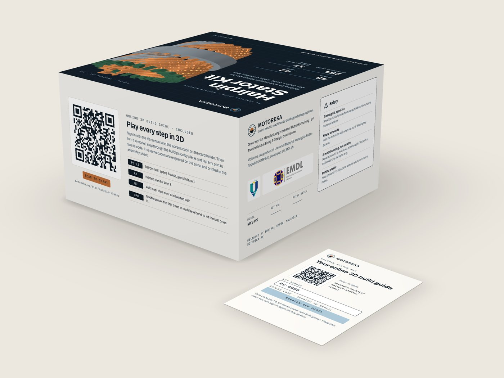

Hairpin Stator Kit
Build a 24-slot, 4-pole hairpin stator from 254 printed parts, with copper wire inside every pin: insert, twist, weld, connect, then test each phase with a multimeter. Every part carries its code, and the online 3D guide plays every step.

A four-layer hairpin winding, at 1.5× scale
The layout of a hairpin traction stator: pins inserted from the crown side, legs twisted on the weld side, pairs joined, jumpers and leads to a terminal board. 17 steps in five stages.
- Winding
- 24 slots, 4 poles, 4 layers, full pitch
- Hairpins
- 48, each printed in two halves
- Joints
- 42 welds, 3 jumpers, 6 leads
- Core
- Ø186 mm, 50 mm stack (1.5× scale)
- Conductor
- 22 AWG copper inside every printed pin
- Phase check
- about 0.5 Ω per phase, no short between phases
- 1–2Core and linersThe core packets go into the stand; a paper liner goes into each of the 24 slots.
- 3–6Crown sideHairpin halves go in lane by lane, L1 to L4, each with its copper wire laid in.
- 7–11Weld sideThe stator is turned over and the twisted arms go on, A4 to A1.
- 12–15Weld and connectThe copper tails are twisted and 42 weld caps clipped on; then 3 jumpers and 6 leads.
- 16–17TestContinuity on each phase, no short between phases, then star or delta at the terminal board.
Try the first three steps
Turn the model, play each step piece by piece, and click a part for its code. The preview has steps 1 to 3 with their how-to clips (folding a liner, wiring a hairpin); kit owners sign in and play all 17.
254 printed parts, each engraved with its code
The same code is engraved on the part, printed in the assembly guide and shown in the 3D viewer, so a student always knows which piece goes next.
- P5-L1 … P7-L4Hairpin halves×9612 shapes in 4 lanes; 12 in flexible TPU
- A1 … A4Twisted arms×96the leg ends on the weld side; 12 in TPU
- WC · LCWeld caps and lead clips×4842 caps over the twisted pairs, 6 clips
- JU · JV · JWJumpers×3one per phase
- C1 · C2Core packets×224 slots, Ø186 mm
- SR · SLStand ring and legs×4holds the stator while you work
- CC · CWCollars×2crown side and weld side
- JD · JMLiner jig×2folds the 24 slot liners
- TBTerminal board×1star or delta

- 50 m of 22 AWG tinned copper wire
- Insulation paper for the 24 liners
- Terminal set: 6 M4 studs, nuts and washers, 6 ring lugs, 3 links
- 2 m of flexible wire in red, yellow and blue
- The assembly guide: 17 steps, the weld map and the pin table
- Your access card for the online 3D build guide
- A multimeter with a continuity beep
- Flush cutters and fine pliers
- A ring-lug crimper
- Safety glasses
Every step in 3D, for kit owners

The card in the box carries the kit number and an access code under a scratch-off panel. Sign in once and the full Kit Viewer opens: all 17 steps, piece by piece, with the parts for each step, the weld map and the phase colours, and how-to clips for the hand work: folding the liners, wiring the hairpins with their cut lengths, putting the arms on, twisting and capping the welds, the studs, lugs and leads on the terminal board, and the phase check. It runs in the browser on a laptop, a tablet or a phone.
One code per kit, for the owner and their group.
Build the stator the lectures describe
Short answers
Is it a working motor?
No. It is the stator winding, built the way a hairpin stator is built, with copper wire inside the printed pins so every phase can be tested with a multimeter. Never connect it to mains or a power supply.
Who is it for?
Engineering students and teams learning how hairpin stators are designed and made, university and TVET labs, and anyone taking the Manufacturing part of the EV Traction Motor course.
Do I need the course?
No. The kit comes with the assembly guide and the online 3D build guide. The course explains why the winding is laid out this way; the kit lets you build it with your hands.
How long does the build take?
It depends on the group. The guide splits it into 17 steps in five stages, so it can run over several sessions.
How does the online build guide work?
The card in the box carries the kit number and an access code. Sign in once at motoreka.my/kits/hairpin-stator/viewer/ and play every step on any device.
Request a quote
Tell us how many kits you need and where they go. We reply within one working day.
WhatsApp+60 13-390 2485Fastest for quick questionsEmailmahizami@umpsa.edu.myFor proposals and quotations